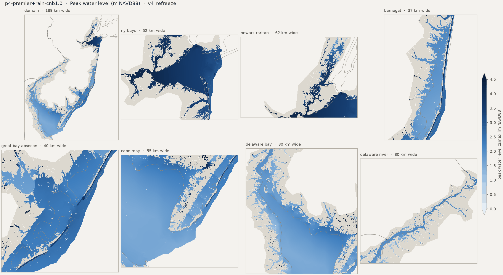
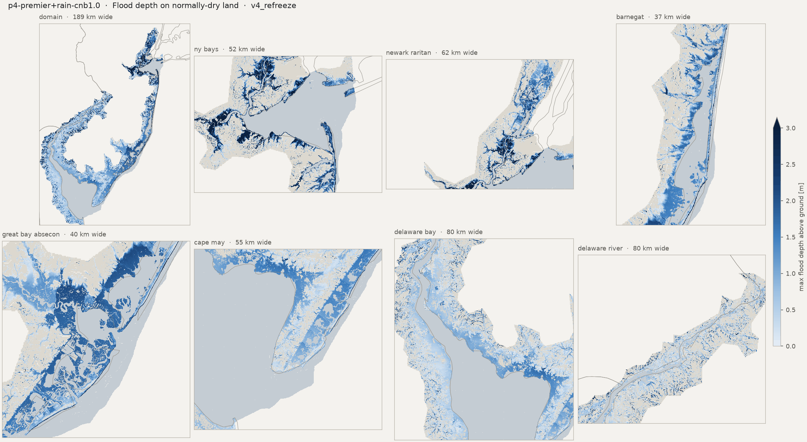
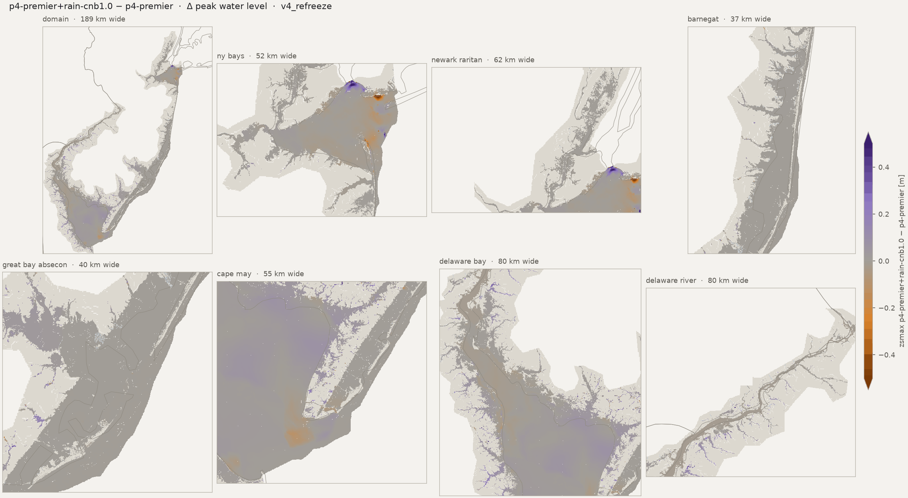
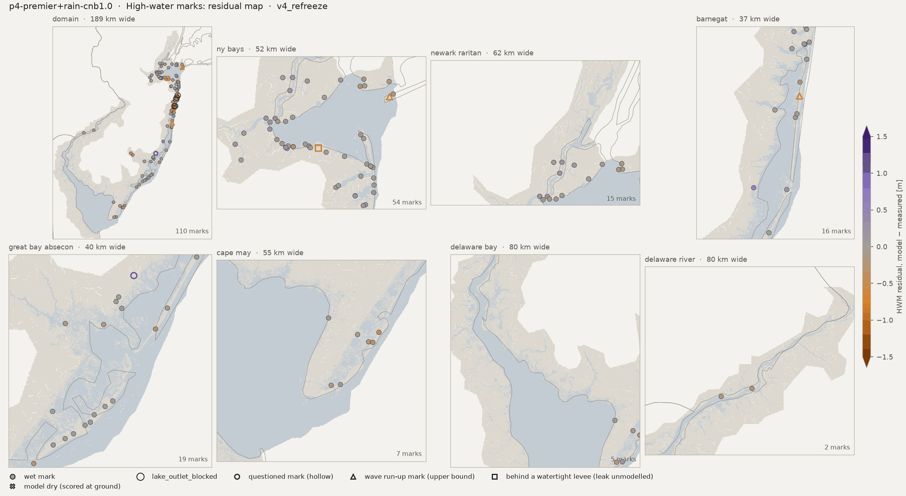
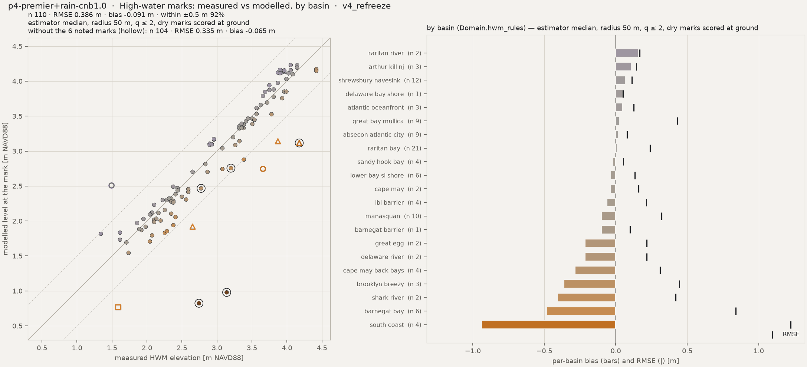
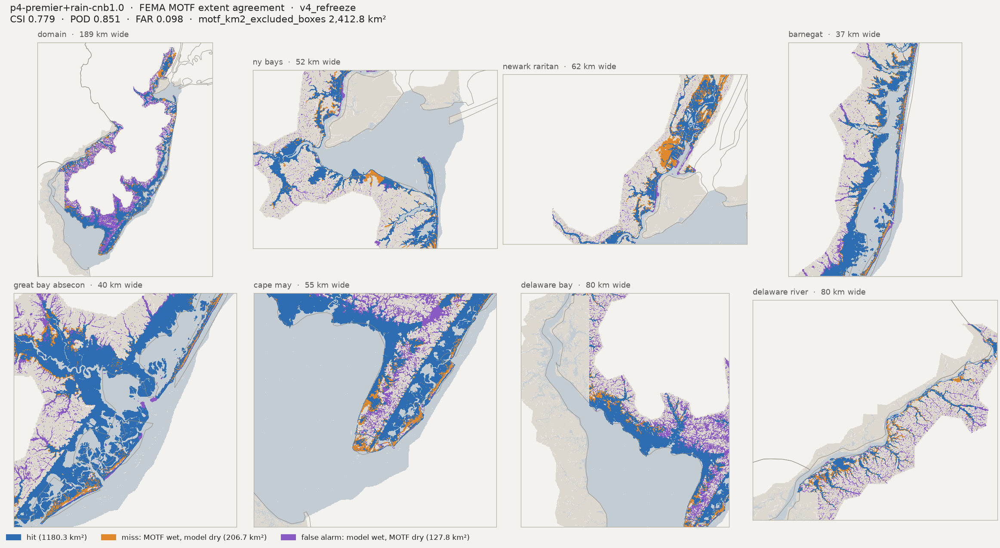
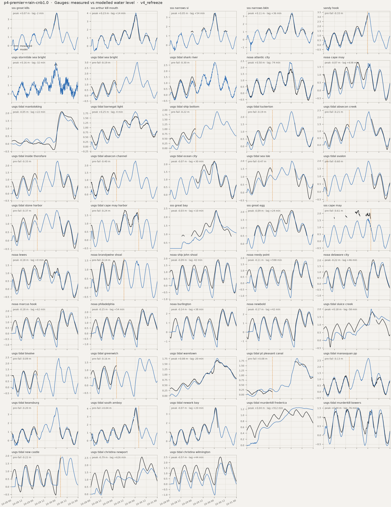
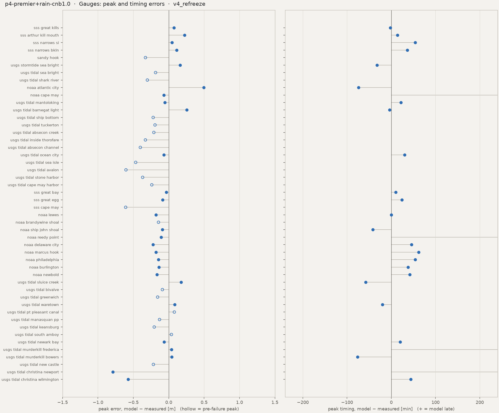
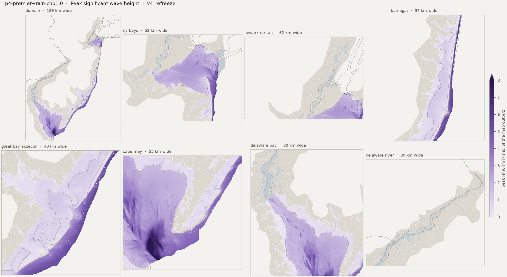

Run card, flags and the standard figure set. HWM numbers: estimator median, radius 50 m. Compare with p4-premier
Preliminary research diagnostics — not peer-reviewed results.
HWM: estimator median, radius 50 m, q ≤ 2, dry marks scored at ground (the _scored keys). CSI / POD / FAR on sheet-valid land; km² excl. = motf_km2_excluded_boxes.









| peak_zb_sss_great_kills_m | -1.5018250942230225 |
| peak_obs_sss_great_kills_m | 3.650640566666667 |
| peak_obs_time_sss_great_kills | 2012-10-30T00:42 |
| peak_mod_full_sss_great_kills_m | 3.724008321762085 |
| peak_mod_full_time_sss_great_kills | 2012-10-30T00:40 |
| peak_err_sss_great_kills_m | 0.0733677550954179 |
| peak_lag_sss_great_kills_min | -2.0 |
| peak_zb_sss_arthur_kill_mouth_m | -1.062054991722107 |
| peak_obs_sss_arthur_kill_mouth_m | 3.8134290000000006 |
| peak_obs_time_sss_arthur_kill_mouth | 2012-10-30T00:36 |
| peak_mod_full_sss_arthur_kill_mouth_m | 4.038502216339111 |
| peak_mod_full_time_sss_arthur_kill_mouth | 2012-10-30T00:50 |
| peak_err_sss_arthur_kill_mouth_m | 0.2250732163391107 |
| peak_lag_sss_arthur_kill_mouth_min | 14.0 |
| peak_zb_sss_narrows_si_m | -2.052652597427368 |
| peak_obs_sss_narrows_si_m | 3.4239073 |
| peak_obs_time_sss_narrows_si | 2012-10-30T00:06 |
| peak_mod_full_sss_narrows_si_m | 3.471534490585327 |
| peak_mod_full_time_sss_narrows_si | 2012-10-30T01:00 |
| peak_err_sss_narrows_si_m | 0.0476271905853269 |
| peak_lag_sss_narrows_si_min | 54.0 |
| peak_zb_sss_narrows_bkln_m | -3.9864342212677 |
| peak_obs_sss_narrows_bkln_m | 3.315567833333333 |
| peak_obs_time_sss_narrows_bkln | 2012-10-30T00:24 |
| peak_mod_full_sss_narrows_bkln_m | 3.4286882877349854 |
| peak_mod_full_time_sss_narrows_bkln | 2012-10-30T01:00 |
| peak_err_sss_narrows_bkln_m | 0.1131204544016521 |
| peak_lag_sss_narrows_bkln_min | 36.0 |
| peak_zb_sandy_hook_m | -4.570703029632568 |
| peak_obs_sandy_hook_m | 3.175 |
| peak_obs_time_sandy_hook | 2012-10-29T23:36 |
| peak_mod_full_sandy_hook_m | 3.424316644668579 |
| peak_mod_full_time_sandy_hook | 2012-10-30T01:20 |
| peak_mod_prefail_sandy_hook_m | 2.846401691436768 |
| peak_err_prefail_sandy_hook_m | -0.3285983085632322 |
| peak_record_ends_sandy_hook | 2012-10-29 23:36 |
| peak_zb_usgs_stormtide_sea_bright_m | -2.3048408031463623 |
| peak_obs_usgs_stormtide_sea_bright_m | 3.4651196864959743 |
| peak_obs_time_usgs_stormtide_sea_bright | 2012-10-30T00:12 |
| peak_mod_full_usgs_stormtide_sea_bright_m | 3.625176668167114 |
| peak_mod_full_time_usgs_stormtide_sea_bright | 2012-10-29T23:40 |
| peak_err_usgs_stormtide_sea_bright_m | 0.1600569816711399 |
| peak_lag_usgs_stormtide_sea_bright_min | -32.0 |
| peak_zb_usgs_tidal_sea_bright_m | -4.364447116851807 |
| peak_obs_usgs_tidal_sea_bright_m | 1.383792 |
| peak_obs_time_usgs_tidal_sea_bright | 2012-10-29T01:12 |
| peak_mod_full_usgs_tidal_sea_bright_m | 3.02284836769104 |
| peak_mod_full_time_usgs_tidal_sea_bright | 2012-10-30T02:20 |
| peak_mod_prefail_usgs_tidal_sea_bright_m | 1.197929859161377 |
| peak_err_prefail_usgs_tidal_sea_bright_m | -0.1858621408386231 |
| peak_record_ends_usgs_tidal_sea_bright | 2012-10-29 04:00 |
| peak_zb_usgs_tidal_shark_river_m | -4.12901782989502 |
| peak_obs_usgs_tidal_shark_river_m | 1.527048 |
| peak_obs_time_usgs_tidal_shark_river | 2012-10-29T00:00 |
| peak_mod_full_usgs_tidal_shark_river_m | 2.743114709854126 |
| peak_mod_full_time_usgs_tidal_shark_river | 2012-10-30T00:30 |
| peak_mod_prefail_usgs_tidal_shark_river_m | 1.228378415107727 |
| peak_err_prefail_usgs_tidal_shark_river_m | -0.3017175848922728 |
| peak_record_ends_usgs_tidal_shark_river | 2012-10-29 04:00 |
| peak_zb_noaa_atlantic_city_m | -7.123184680938721 |
| peak_obs_noaa_atlantic_city_m | 1.915 |
| peak_obs_time_noaa_atlantic_city | 2012-10-30T00:24 |
| peak_mod_full_noaa_atlantic_city_m | 2.410783290863037 |
| peak_mod_full_time_noaa_atlantic_city | 2012-10-29T23:10 |
| peak_err_noaa_atlantic_city_m | 0.4957832908630371 |
| peak_lag_noaa_atlantic_city_min | -74.0 |
| peak_zb_noaa_cape_may_m | -6.598322868347168 |
| peak_obs_noaa_cape_may_m | 1.798 |
| peak_obs_time_noaa_cape_may | 2012-10-29T13:42 |
| peak_mod_full_noaa_cape_may_m | 1.7286726236343384 |
| peak_mod_full_time_noaa_cape_may | 2012-10-30T00:20 |
| peak_err_noaa_cape_may_m | -0.0693273763656616 |
| peak_lag_noaa_cape_may_min | 638.0 |
| peak_zb_usgs_tidal_mantoloking_m | -2.4557981491088867 |
| peak_obs_usgs_tidal_mantoloking_m | 2.1061680000000003 |
| peak_obs_time_usgs_tidal_mantoloking | 2012-10-30T06:18 |
| peak_mod_full_usgs_tidal_mantoloking_m | 2.0523853302001958 |
| peak_mod_full_time_usgs_tidal_mantoloking | 2012-10-30T06:40 |
| peak_err_usgs_tidal_mantoloking_m | -0.0537826697998049 |
| peak_lag_usgs_tidal_mantoloking_min | 22.0 |
| peak_zb_usgs_tidal_barnegat_light_m | -7.473830223083496 |
| peak_obs_usgs_tidal_barnegat_light_m | 1.588008 |
| peak_obs_time_usgs_tidal_barnegat_light | 2012-10-30T00:24 |
| peak_mod_full_usgs_tidal_barnegat_light_m | 1.842856884002685 |
| peak_mod_full_time_usgs_tidal_barnegat_light | 2012-10-30T00:20 |
| peak_err_usgs_tidal_barnegat_light_m | 0.2548488840026854 |
| peak_lag_usgs_tidal_barnegat_light_min | -4.0 |
| peak_zb_usgs_tidal_ship_bottom_m | -4.847646713256836 |
| peak_obs_usgs_tidal_ship_bottom_m | 1.024128 |
| peak_obs_time_usgs_tidal_ship_bottom | 2012-10-29T02:54 |
| peak_mod_full_usgs_tidal_ship_bottom_m | 1.9163110256195068 |
| peak_mod_full_time_usgs_tidal_ship_bottom | 2012-10-30T03:00 |
| peak_mod_prefail_usgs_tidal_ship_bottom_m | 0.8046455979347229 |
| peak_err_prefail_usgs_tidal_ship_bottom_m | -0.219482402065277 |
| peak_record_ends_usgs_tidal_ship_bottom | 2012-10-29 03:54 |
| peak_zb_usgs_tidal_tuckerton_m | -2.1096279621124268 |
| peak_obs_usgs_tidal_tuckerton_m | 1.591056 |
| peak_obs_time_usgs_tidal_tuckerton | 2012-10-30T04:00 |
| peak_mod_full_usgs_tidal_tuckerton_m | 2.369852304458618 |
| peak_mod_full_time_usgs_tidal_tuckerton | 2012-10-30T00:30 |
| peak_mod_prefail_usgs_tidal_tuckerton_m | 1.132203221321106 |
| peak_err_prefail_usgs_tidal_tuckerton_m | -0.193676778678894 |
| peak_record_ends_usgs_tidal_tuckerton | 2012-10-29 03:54 |
| peak_zb_usgs_tidal_absecon_creek_m | -1.0937918424606323 |
| peak_obs_usgs_tidal_absecon_creek_m | 1.87452 |
| peak_obs_time_usgs_tidal_absecon_creek | 2012-10-30T04:00 |
| peak_mod_full_usgs_tidal_absecon_creek_m | 2.413414478302002 |
| peak_mod_full_time_usgs_tidal_absecon_creek | 2012-10-30T01:10 |
| peak_mod_prefail_usgs_tidal_absecon_creek_m | 1.2833843231201172 |
| peak_err_prefail_usgs_tidal_absecon_creek_m | -0.210135676879883 |
| peak_record_ends_usgs_tidal_absecon_creek | 2012-10-29 03:54 |
| peak_zb_usgs_tidal_inside_thorofare_m | -4.974030494689941 |
| peak_obs_usgs_tidal_inside_thorofare_m | 1.712976 |
| peak_obs_time_usgs_tidal_inside_thorofare | 2012-10-30T04:00 |
| peak_mod_full_usgs_tidal_inside_thorofare_m | 2.3213584423065186 |
| peak_mod_full_time_usgs_tidal_inside_thorofare | 2012-10-30T01:40 |
| peak_mod_prefail_usgs_tidal_inside_thorofare_m | 1.1062747240066528 |
| peak_err_prefail_usgs_tidal_inside_thorofare_m | -0.3293332759933471 |
| peak_record_ends_usgs_tidal_inside_thorofare | 2012-10-29 03:54 |
| peak_zb_usgs_tidal_absecon_channel_m | -3.296544551849365 |
| peak_obs_usgs_tidal_absecon_channel_m | 1.5575280000000002 |
| peak_obs_time_usgs_tidal_absecon_channel | 2012-10-29T01:06 |
| peak_mod_full_usgs_tidal_absecon_channel_m | 2.3048770427703857 |
| peak_mod_full_time_usgs_tidal_absecon_channel | 2012-10-30T00:30 |
| peak_mod_prefail_usgs_tidal_absecon_channel_m | 1.156524658203125 |
| peak_err_prefail_usgs_tidal_absecon_channel_m | -0.4010033417968752 |
| peak_record_ends_usgs_tidal_absecon_channel | 2012-10-29 03:54 |
| peak_zb_usgs_tidal_ocean_city_m | -7.289493083953857 |
| peak_obs_usgs_tidal_ocean_city_m | 2.2098 |
| peak_obs_time_usgs_tidal_ocean_city | 2012-10-30T00:00 |
| peak_mod_full_usgs_tidal_ocean_city_m | 2.141072988510132 |
| peak_mod_full_time_usgs_tidal_ocean_city | 2012-10-30T00:30 |
| peak_err_usgs_tidal_ocean_city_m | -0.0687270114898681 |
| peak_lag_usgs_tidal_ocean_city_min | 30.0 |
| peak_zb_usgs_tidal_sea_isle_m | -1.7741228342056274 |
| peak_obs_usgs_tidal_sea_isle_m | 1.575816 |
| peak_obs_time_usgs_tidal_sea_isle | 2012-10-29T01:18 |
| peak_mod_full_usgs_tidal_sea_isle_m | 1.9949806928634644 |
| peak_mod_full_time_usgs_tidal_sea_isle | 2012-10-30T00:50 |
| peak_mod_prefail_usgs_tidal_sea_isle_m | 1.108994960784912 |
| peak_err_prefail_usgs_tidal_sea_isle_m | -0.466821039215088 |
| peak_record_ends_usgs_tidal_sea_isle | 2012-10-29 03:54 |
| peak_zb_usgs_tidal_avalon_m | -6.805160999298096 |
| peak_obs_usgs_tidal_avalon_m | 1.139952 |
| peak_obs_time_usgs_tidal_avalon | 2012-10-30T04:00 |
| peak_mod_full_usgs_tidal_avalon_m | 1.9917943477630613 |
| peak_mod_full_time_usgs_tidal_avalon | 2012-10-30T00:40 |
| peak_mod_prefail_usgs_tidal_avalon_m | 0.2980844378471374 |
| peak_err_prefail_usgs_tidal_avalon_m | -0.6041235621528626 |
| peak_record_ends_usgs_tidal_avalon | 2012-10-28 03:54 |
| peak_zb_usgs_tidal_stone_harbor_m | -7.561686038970947 |
| peak_obs_usgs_tidal_stone_harbor_m | 1.551432 |
| peak_obs_time_usgs_tidal_stone_harbor | 2012-10-29T01:12 |
| peak_mod_full_usgs_tidal_stone_harbor_m | 1.8004264831542969 |
| peak_mod_full_time_usgs_tidal_stone_harbor | 2012-10-30T01:00 |
| peak_mod_prefail_usgs_tidal_stone_harbor_m | 1.1829742193222046 |
| peak_err_prefail_usgs_tidal_stone_harbor_m | -0.3684577806777955 |
| peak_record_ends_usgs_tidal_stone_harbor | 2012-10-29 03:54 |
| peak_zb_usgs_tidal_cape_may_harbor_m | -1.5647752285003662 |
| peak_obs_usgs_tidal_cape_may_harbor_m | 1.79832 |
| peak_obs_time_usgs_tidal_cape_may_harbor | 2012-10-29T12:42 |
| peak_mod_full_usgs_tidal_cape_may_harbor_m | 1.559292554855347 |
| peak_mod_full_time_usgs_tidal_cape_may_harbor | 2012-10-29T13:00 |
| peak_mod_prefail_usgs_tidal_cape_may_harbor_m | 1.559292554855347 |
| peak_err_prefail_usgs_tidal_cape_may_harbor_m | -0.2390274451446534 |
| peak_record_ends_usgs_tidal_cape_may_harbor | 2012-10-30 03:54 |
| peak_zb_sss_great_bay_m | 0.1733946055173874 |
| peak_obs_sss_great_bay_m | 2.389551566666667 |
| peak_obs_time_sss_great_bay | 2012-10-30T02:00 |
| peak_mod_full_sss_great_bay_m | 2.354676485061645 |
| peak_mod_full_time_sss_great_bay | 2012-10-30T02:10 |
| peak_err_sss_great_bay_m | -0.0348750816050213 |
| peak_lag_sss_great_bay_min | 10.0 |
| peak_zb_sss_great_egg_m | -1.4158239364624023 |
| peak_obs_sss_great_egg_m | 2.098467566666667 |
| peak_obs_time_sss_great_egg | 2012-10-30T00:36 |
| peak_mod_full_sss_great_egg_m | 2.01331090927124 |
| peak_mod_full_time_sss_great_egg | 2012-10-30T01:00 |
| peak_err_sss_great_egg_m | -0.0851566573954265 |
| peak_lag_sss_great_egg_min | 24.0 |
| peak_zb_sss_cape_may_m | -8.127169609069824 |
| peak_obs_sss_cape_may_m | 2.24273711641651 |
| peak_obs_time_sss_cape_may | 2012-10-29T13:48 |
| peak_mod_full_sss_cape_may_m | 1.6342846155166626 |
| peak_mod_full_time_sss_cape_may | 2012-10-30T00:30 |
| peak_mod_prefail_sss_cape_may_m | 1.6342846155166626 |
| peak_err_prefail_sss_cape_may_m | -0.608452500899848 |
| peak_record_ends_sss_cape_may | 2012-10-30 03:12 |
| peak_zb_noaa_lewes_m | -8.599800109863281 |
| peak_obs_noaa_lewes_m | 1.853 |
| peak_obs_time_noaa_lewes | 2012-10-29T13:00 |
| peak_mod_full_noaa_lewes_m | 1.6716139316558838 |
| peak_mod_full_time_noaa_lewes | 2012-10-29T13:00 |
| peak_err_noaa_lewes_m | -0.1813860683441162 |
| peak_lag_noaa_lewes_min | 0.0 |
| peak_zb_noaa_brandywine_shoal_m | -3.865700483322144 |
| peak_obs_noaa_brandywine_shoal_m | 1.5445000000000004 |
| peak_obs_time_noaa_brandywine_shoal | 2012-10-29T12:00 |
| peak_mod_full_noaa_brandywine_shoal_m | 1.522393822669983 |
| peak_mod_full_time_noaa_brandywine_shoal | 2012-10-29T12:40 |
| peak_mod_prefail_noaa_brandywine_shoal_m | 1.3999781608581543 |
| peak_err_prefail_noaa_brandywine_shoal_m | -0.1445218391418461 |
| peak_record_ends_noaa_brandywine_shoal | 2012-10-29 12:00 |
| peak_zb_noaa_ship_john_shoal_m | -4.995533466339111 |
| peak_obs_noaa_ship_john_shoal_m | 1.918 |
| peak_obs_time_noaa_ship_john_shoal | 2012-10-30T04:12 |
| peak_mod_full_noaa_ship_john_shoal_m | 1.830183744430542 |
| peak_mod_full_time_noaa_ship_john_shoal | 2012-10-30T03:30 |
| peak_err_noaa_ship_john_shoal_m | -0.0878162555694581 |
| peak_lag_noaa_ship_john_shoal_min | -42.0 |
| peak_zb_noaa_reedy_point_m | -8.337135314941406 |
| peak_obs_noaa_reedy_point_m | 1.869 |
| peak_obs_time_noaa_reedy_point | 2012-10-30T05:42 |
| peak_mod_full_noaa_reedy_point_m | 1.7615203857421875 |
| peak_mod_full_time_noaa_reedy_point | 2012-10-30T15:40 |
| peak_err_noaa_reedy_point_m | -0.1074796142578125 |
| peak_lag_noaa_reedy_point_min | 598.0 |
| peak_zb_noaa_delaware_city_m | -7.879655838012695 |
| peak_obs_noaa_delaware_city_m | 2.052 |
| peak_obs_time_noaa_delaware_city | 2012-10-30T05:54 |
| peak_mod_full_noaa_delaware_city_m | 1.8304715156555176 |
| peak_mod_full_time_noaa_delaware_city | 2012-10-30T06:40 |
| peak_err_noaa_delaware_city_m | -0.2215284843444824 |
| peak_lag_noaa_delaware_city_min | 46.0 |
| peak_zb_noaa_marcus_hook_m | -6.720826625823975 |
| peak_obs_noaa_marcus_hook_m | 2.179 |
| peak_obs_time_noaa_marcus_hook | 2012-10-30T06:48 |
| peak_mod_full_noaa_marcus_hook_m | 1.999874234199524 |
| peak_mod_full_time_noaa_marcus_hook | 2012-10-30T07:50 |
| peak_err_noaa_marcus_hook_m | -0.1791257658004759 |
| peak_lag_noaa_marcus_hook_min | 62.0 |
| peak_zb_noaa_philadelphia_m | -4.274573802947998 |
| peak_obs_noaa_philadelphia_m | 2.292 |
| peak_obs_time_noaa_philadelphia | 2012-10-30T08:06 |
| peak_mod_full_noaa_philadelphia_m | 2.1455318927764893 |
| peak_mod_full_time_noaa_philadelphia | 2012-10-30T09:00 |
| peak_err_noaa_philadelphia_m | -0.1464681072235105 |
| peak_lag_noaa_philadelphia_min | 54.0 |
| peak_zb_noaa_burlington_m | -14.647468566894531 |
| peak_obs_noaa_burlington_m | 2.4935000000000005 |
| peak_obs_time_noaa_burlington | 2012-10-30T09:12 |
| peak_mod_full_noaa_burlington_m | 2.355198621749878 |
| peak_mod_full_time_noaa_burlington | 2012-10-30T09:50 |
| peak_err_noaa_burlington_m | -0.1383013782501225 |
| peak_lag_noaa_burlington_min | 38.0 |
| peak_zb_noaa_newbold_m | -15.88861846923828 |
| peak_obs_noaa_newbold_m | 2.5809999999999995 |
| peak_obs_time_noaa_newbold | 2012-10-30T09:18 |
| peak_mod_full_noaa_newbold_m | 2.415610790252685 |
| peak_mod_full_time_noaa_newbold | 2012-10-30T10:00 |
| peak_err_noaa_newbold_m | -0.1653892097473139 |
| peak_lag_noaa_newbold_min | 42.0 |
| peak_zb_usgs_tidal_sluice_creek_m | -0.2426208108663559 |
| peak_obs_usgs_tidal_sluice_creek_m | 1.831848 |
| peak_obs_time_usgs_tidal_sluice_creek | 2012-10-30T04:48 |
| peak_mod_full_usgs_tidal_sluice_creek_m | 2.008538246154785 |
| peak_mod_full_time_usgs_tidal_sluice_creek | 2012-10-30T03:50 |
| peak_err_usgs_tidal_sluice_creek_m | 0.1766902461547852 |
| peak_lag_usgs_tidal_sluice_creek_min | -58.0 |
| peak_zb_usgs_tidal_bivalve_m | -7.203732490539551 |
| peak_obs_usgs_tidal_bivalve_m | 1.3929360000000002 |
| peak_obs_time_usgs_tidal_bivalve | 2012-10-29T01:48 |
| peak_mod_full_usgs_tidal_bivalve_m | 2.4266457557678223 |
| peak_mod_full_time_usgs_tidal_bivalve | 2012-10-30T03:00 |
| peak_mod_prefail_usgs_tidal_bivalve_m | 1.3036761283874512 |
| peak_err_prefail_usgs_tidal_bivalve_m | -0.089259871612549 |
| peak_record_ends_usgs_tidal_bivalve | 2012-10-29 03:54 |
| peak_zb_usgs_tidal_greenwich_m | -4.599920749664307 |
| peak_obs_usgs_tidal_greenwich_m | 1.286256 |
| peak_obs_time_usgs_tidal_greenwich | 2012-10-29T03:18 |
| peak_mod_full_usgs_tidal_greenwich_m | 1.7714169025421145 |
| peak_mod_full_time_usgs_tidal_greenwich | 2012-10-30T05:10 |
| peak_mod_prefail_usgs_tidal_greenwich_m | 1.129526138305664 |
| peak_err_prefail_usgs_tidal_greenwich_m | -0.156729861694336 |
| peak_record_ends_usgs_tidal_greenwich | 2012-10-29 03:54 |
| peak_zb_usgs_tidal_waretown_m | -1.282608151435852 |
| peak_obs_usgs_tidal_waretown_m | 1.682496 |
| peak_obs_time_usgs_tidal_waretown | 2012-10-30T03:30 |
| peak_mod_full_usgs_tidal_waretown_m | 1.7657791376113892 |
| peak_mod_full_time_usgs_tidal_waretown | 2012-10-30T03:10 |
| peak_err_usgs_tidal_waretown_m | 0.0832831376113891 |
| peak_lag_usgs_tidal_waretown_min | -20.0 |
| peak_zb_usgs_tidal_pt_pleasant_canal_m | -7.331141471862793 |
| peak_obs_usgs_tidal_pt_pleasant_canal_m | 1.703832 |
| peak_obs_time_usgs_tidal_pt_pleasant_canal | 2012-10-30T05:42 |
| peak_mod_full_usgs_tidal_pt_pleasant_canal_m | 1.879372358322144 |
| peak_mod_full_time_usgs_tidal_pt_pleasant_canal | 2012-10-30T06:30 |
| peak_mod_prefail_usgs_tidal_pt_pleasant_canal_m | 0.3140612244606018 |
| peak_err_prefail_usgs_tidal_pt_pleasant_canal_m | 0.0793652244606017 |
| peak_record_ends_usgs_tidal_pt_pleasant_canal | 2012-10-29 03:54 |
| peak_zb_usgs_tidal_manasquan_pp_m | -5.012785911560059 |
| peak_obs_usgs_tidal_manasquan_pp_m | 1.331976 |
| peak_obs_time_usgs_tidal_manasquan_pp | 2012-10-29T00:06 |
| peak_mod_full_usgs_tidal_manasquan_pp_m | 2.6758594512939453 |
| peak_mod_full_time_usgs_tidal_manasquan_pp | 2012-10-30T00:30 |
| peak_mod_prefail_usgs_tidal_manasquan_pp_m | 1.202519178390503 |
| peak_err_prefail_usgs_tidal_manasquan_pp_m | -0.1294568216094971 |
| peak_record_ends_usgs_tidal_manasquan_pp | 2012-10-29 03:54 |
| peak_zb_usgs_tidal_keansburg_m | -1.2813526391983032 |
| peak_obs_usgs_tidal_keansburg_m | 1.591056 |
| peak_obs_time_usgs_tidal_keansburg | 2012-10-29T00:00 |
| peak_mod_full_usgs_tidal_keansburg_m | 3.768615484237671 |
| peak_mod_full_time_usgs_tidal_keansburg | 2012-10-30T01:00 |
| peak_mod_prefail_usgs_tidal_keansburg_m | 1.386299967765808 |
| peak_err_prefail_usgs_tidal_keansburg_m | -0.2047560322341919 |
| peak_record_ends_usgs_tidal_keansburg | 2012-10-29 03:54 |
| peak_zb_usgs_tidal_south_amboy_m | -1.2796423435211182 |
| peak_obs_usgs_tidal_south_amboy_m | 4.087368000000001 |
| peak_obs_time_usgs_tidal_south_amboy | 2012-10-30T00:42 |
| peak_mod_full_usgs_tidal_south_amboy_m | 4.125776767730713 |
| peak_mod_full_time_usgs_tidal_south_amboy | 2012-10-30T01:00 |
| peak_mod_prefail_usgs_tidal_south_amboy_m | 4.125776767730713 |
| peak_err_prefail_usgs_tidal_south_amboy_m | 0.0384087677307123 |
| peak_record_ends_usgs_tidal_south_amboy | 2012-10-30 04:00 |
| peak_zb_usgs_tidal_newark_bay_m | -8.382606506347656 |
| peak_obs_usgs_tidal_newark_bay_m | 3.697224 |
| peak_obs_time_usgs_tidal_newark_bay | 2012-10-30T01:30 |
| peak_mod_full_usgs_tidal_newark_bay_m | 3.630645751953125 |
| peak_mod_full_time_usgs_tidal_newark_bay | 2012-10-30T01:50 |
| peak_err_usgs_tidal_newark_bay_m | -0.0665782480468752 |
| peak_lag_usgs_tidal_newark_bay_min | 20.0 |
| peak_zb_usgs_tidal_murderkill_frederica_m | -2.5158419609069824 |
| peak_obs_usgs_tidal_murderkill_frederica_m | 1.210056 |
| peak_obs_time_usgs_tidal_murderkill_frederica | 2012-10-29T17:18 |
| peak_mod_full_usgs_tidal_murderkill_frederica_m | 1.2497515678405762 |
| peak_mod_full_time_usgs_tidal_murderkill_frederica | 2012-10-30T08:30 |
| peak_err_usgs_tidal_murderkill_frederica_m | 0.0396955678405761 |
| peak_lag_usgs_tidal_murderkill_frederica_min | 912.0 |
| peak_zb_usgs_tidal_murderkill_bowers_m | -1.6374911069869995 |
| peak_obs_usgs_tidal_murderkill_bowers_m | 1.484376 |
| peak_obs_time_usgs_tidal_murderkill_bowers | 2012-10-29T14:36 |
| peak_mod_full_usgs_tidal_murderkill_bowers_m | 1.52785062789917 |
| peak_mod_full_time_usgs_tidal_murderkill_bowers | 2012-10-29T13:20 |
| peak_err_usgs_tidal_murderkill_bowers_m | 0.0434746278991697 |
| peak_lag_usgs_tidal_murderkill_bowers_min | -76.0 |
| peak_zb_usgs_tidal_new_castle_m | -0.6493237018585205 |
| peak_obs_usgs_tidal_new_castle_m | 1.923288 |
| peak_obs_time_usgs_tidal_new_castle | 2012-10-30T04:54 |
| peak_mod_full_usgs_tidal_new_castle_m | 1.924707055091858 |
| peak_mod_full_time_usgs_tidal_new_castle | 2012-10-30T06:50 |
| peak_mod_prefail_usgs_tidal_new_castle_m | 1.706900715827942 |
| peak_err_prefail_usgs_tidal_new_castle_m | -0.216387284172058 |
| peak_record_ends_usgs_tidal_new_castle | 2012-10-30 04:54 |
| peak_zb_usgs_tidal_christina_newport_m | -4.435999870300293 |
| peak_obs_usgs_tidal_christina_newport_m | 2.563368 |
| peak_obs_time_usgs_tidal_christina_newport | 2012-10-30T07:24 |
| peak_mod_full_usgs_tidal_christina_newport_m | 1.7729583978652954 |
| peak_mod_full_time_usgs_tidal_christina_newport | 2012-10-30T17:50 |
| peak_err_usgs_tidal_christina_newport_m | -0.7904096021347047 |
| peak_lag_usgs_tidal_christina_newport_min | 626.0 |
| peak_zb_usgs_tidal_christina_wilmington_m | -1.9243137836456297 |
| peak_obs_usgs_tidal_christina_wilmington_m | 2.523744 |
| peak_obs_time_usgs_tidal_christina_wilmington | 2012-10-30T06:36 |
| peak_mod_full_usgs_tidal_christina_wilmington_m | 1.95085883140564 |
| peak_mod_full_time_usgs_tidal_christina_wilmington | 2012-10-30T07:20 |
| peak_err_usgs_tidal_christina_wilmington_m | -0.5728851685943601 |
| peak_lag_usgs_tidal_christina_wilmington_min | 44.0 |
| tide_obs_range_sss_great_kills_m | 0.204 |
| tide_mod_range_sss_great_kills_m | 1.738 |
| tide_mod_drift_sss_great_kills_m | 0.468 |
| tide_mod_frac_rising_sss_great_kills | 0.485 |
| tide_mod_is_tidal_sss_great_kills | True |
| tide_range_damping_sss_great_kills_m | -1.534 |
| phase_lag_sss_great_kills_min | |
| tide_obs_range_sss_arthur_kill_mouth_m | 1.309 |
| tide_mod_range_sss_arthur_kill_mouth_m | 1.709 |
| tide_mod_drift_sss_arthur_kill_mouth_m | 0.524 |
| tide_mod_frac_rising_sss_arthur_kill_mouth | 0.486 |
| tide_mod_is_tidal_sss_arthur_kill_mouth | True |
| tide_range_damping_sss_arthur_kill_mouth_m | -0.4 |
| phase_lag_sss_arthur_kill_mouth_min | 5.4 |
| tide_obs_range_sss_narrows_si_m | 0.407 |
| tide_mod_range_sss_narrows_si_m | 1.808 |
| tide_mod_drift_sss_narrows_si_m | 0.434 |
| tide_mod_frac_rising_sss_narrows_si | 0.553 |
| tide_mod_is_tidal_sss_narrows_si | True |
| tide_range_damping_sss_narrows_si_m | -1.401 |
| phase_lag_sss_narrows_si_min | -46.2 |
| tide_obs_range_sss_narrows_bkln_m | 1.035 |
| tide_mod_range_sss_narrows_bkln_m | 1.719 |
| tide_mod_drift_sss_narrows_bkln_m | 0.427 |
| tide_mod_frac_rising_sss_narrows_bkln | 0.535 |
| tide_mod_is_tidal_sss_narrows_bkln | True |
| tide_range_damping_sss_narrows_bkln_m | -0.685 |
| phase_lag_sss_narrows_bkln_min | -120.0 |
| tide_obs_range_sandy_hook_m | 2.036 |
| tide_mod_range_sandy_hook_m | 1.63 |
| tide_mod_drift_sandy_hook_m | 0.514 |
| tide_mod_frac_rising_sandy_hook | 0.533 |
| tide_mod_is_tidal_sandy_hook | True |
| tide_range_damping_sandy_hook_m | 0.406 |
| phase_lag_sandy_hook_min | -1.1 |
| tide_obs_range_usgs_stormtide_sea_bright_m | |
| tide_mod_range_usgs_stormtide_sea_bright_m | 2.054 |
| tide_mod_drift_usgs_stormtide_sea_bright_m | 0.65 |
| tide_mod_frac_rising_usgs_stormtide_sea_bright | 0.532 |
| tide_mod_is_tidal_usgs_stormtide_sea_bright | True |
| tide_range_damping_usgs_stormtide_sea_bright_m | |
| phase_lag_usgs_stormtide_sea_bright_min | |
| tide_obs_range_usgs_tidal_sea_bright_m | 1.283 |
| tide_mod_range_usgs_tidal_sea_bright_m | 1.233 |
| tide_mod_drift_usgs_tidal_sea_bright_m | 0.369 |
| tide_mod_frac_rising_usgs_tidal_sea_bright | 0.567 |
| tide_mod_is_tidal_usgs_tidal_sea_bright | True |
| tide_range_damping_usgs_tidal_sea_bright_m | 0.05 |
| phase_lag_usgs_tidal_sea_bright_min | 4.4 |
| tide_obs_range_usgs_tidal_shark_river_m | 1.539 |
| tide_mod_range_usgs_tidal_shark_river_m | 1.541 |
| tide_mod_drift_usgs_tidal_shark_river_m | 0.593 |
| tide_mod_frac_rising_usgs_tidal_shark_river | 0.496 |
| tide_mod_is_tidal_usgs_tidal_shark_river | True |
| tide_range_damping_usgs_tidal_shark_river_m | -0.001 |
| phase_lag_usgs_tidal_shark_river_min | 11.7 |
| tide_obs_range_noaa_atlantic_city_m | 1.848 |
| tide_mod_range_noaa_atlantic_city_m | 1.409 |
| tide_mod_drift_noaa_atlantic_city_m | 0.593 |
| tide_mod_frac_rising_noaa_atlantic_city | 0.529 |
| tide_mod_is_tidal_noaa_atlantic_city | True |
| tide_range_damping_noaa_atlantic_city_m | 0.439 |
| phase_lag_noaa_atlantic_city_min | 7.4 |
| tide_obs_range_noaa_cape_may_m | 1.585 |
| tide_mod_range_noaa_cape_may_m | 1.552 |
| tide_mod_drift_noaa_cape_may_m | 0.158 |
| tide_mod_frac_rising_noaa_cape_may | 0.493 |
| tide_mod_is_tidal_noaa_cape_may | True |
| tide_range_damping_noaa_cape_may_m | 0.033 |
| phase_lag_noaa_cape_may_min | -7.1 |
| tide_obs_range_usgs_tidal_mantoloking_m | 0.238 |
| tide_mod_range_usgs_tidal_mantoloking_m | 0.316 |
| tide_mod_drift_usgs_tidal_mantoloking_m | 0.107 |
| tide_mod_frac_rising_usgs_tidal_mantoloking | 0.487 |
| tide_mod_is_tidal_usgs_tidal_mantoloking | True |
| tide_range_damping_usgs_tidal_mantoloking_m | -0.079 |
| phase_lag_usgs_tidal_mantoloking_min | -41.7 |
| tide_obs_range_usgs_tidal_barnegat_light_m | 1.003 |
| tide_mod_range_usgs_tidal_barnegat_light_m | 0.785 |
| tide_mod_drift_usgs_tidal_barnegat_light_m | 0.503 |
| tide_mod_frac_rising_usgs_tidal_barnegat_light | 0.534 |
| tide_mod_is_tidal_usgs_tidal_barnegat_light | True |
| tide_range_damping_usgs_tidal_barnegat_light_m | 0.218 |
| phase_lag_usgs_tidal_barnegat_light_min | -33.0 |
| tide_obs_range_usgs_tidal_ship_bottom_m | 0.579 |
| tide_mod_range_usgs_tidal_ship_bottom_m | 0.527 |
| tide_mod_drift_usgs_tidal_ship_bottom_m | 0.46 |
| tide_mod_frac_rising_usgs_tidal_ship_bottom | 0.504 |
| tide_mod_is_tidal_usgs_tidal_ship_bottom | True |
| tide_range_damping_usgs_tidal_ship_bottom_m | 0.052 |
| phase_lag_usgs_tidal_ship_bottom_min | -16.8 |
| tide_obs_range_usgs_tidal_tuckerton_m | 0.927 |
| tide_mod_range_usgs_tidal_tuckerton_m | 1.119 |
| tide_mod_drift_usgs_tidal_tuckerton_m | 0.492 |
| tide_mod_frac_rising_usgs_tidal_tuckerton | 0.54 |
| tide_mod_is_tidal_usgs_tidal_tuckerton | True |
| tide_range_damping_usgs_tidal_tuckerton_m | -0.193 |
| phase_lag_usgs_tidal_tuckerton_min | -28.6 |
| tide_obs_range_usgs_tidal_absecon_creek_m | 1.183 |
| tide_mod_range_usgs_tidal_absecon_creek_m | 1.158 |
| tide_mod_drift_usgs_tidal_absecon_creek_m | 0.489 |
| tide_mod_frac_rising_usgs_tidal_absecon_creek | 0.489 |
| tide_mod_is_tidal_usgs_tidal_absecon_creek | True |
| tide_range_damping_usgs_tidal_absecon_creek_m | 0.025 |
| phase_lag_usgs_tidal_absecon_creek_min | -20.8 |
| tide_obs_range_usgs_tidal_inside_thorofare_m | 1.222 |
| tide_mod_range_usgs_tidal_inside_thorofare_m | 1.374 |
| tide_mod_drift_usgs_tidal_inside_thorofare_m | 0.285 |
| tide_mod_frac_rising_usgs_tidal_inside_thorofare | 0.5 |
| tide_mod_is_tidal_usgs_tidal_inside_thorofare | True |
| tide_range_damping_usgs_tidal_inside_thorofare_m | -0.152 |
| phase_lag_usgs_tidal_inside_thorofare_min | 7.5 |
| tide_obs_range_usgs_tidal_absecon_channel_m | 1.341 |
| tide_mod_range_usgs_tidal_absecon_channel_m | 1.215 |
| tide_mod_drift_usgs_tidal_absecon_channel_m | 0.565 |
| tide_mod_frac_rising_usgs_tidal_absecon_channel | 0.522 |
| tide_mod_is_tidal_usgs_tidal_absecon_channel | True |
| tide_range_damping_usgs_tidal_absecon_channel_m | 0.126 |
| phase_lag_usgs_tidal_absecon_channel_min | -28.5 |
| tide_obs_range_usgs_tidal_ocean_city_m | 1.134 |
| tide_mod_range_usgs_tidal_ocean_city_m | 1.25 |
| tide_mod_drift_usgs_tidal_ocean_city_m | 0.46 |
| tide_mod_frac_rising_usgs_tidal_ocean_city | 0.504 |
| tide_mod_is_tidal_usgs_tidal_ocean_city | True |
| tide_range_damping_usgs_tidal_ocean_city_m | -0.116 |
| phase_lag_usgs_tidal_ocean_city_min | 47.2 |
| tide_obs_range_usgs_tidal_sea_isle_m | 1.207 |
| tide_mod_range_usgs_tidal_sea_isle_m | 0.675 |
| tide_mod_drift_usgs_tidal_sea_isle_m | 0.461 |
| tide_mod_frac_rising_usgs_tidal_sea_isle | 0.535 |
| tide_mod_is_tidal_usgs_tidal_sea_isle | True |
| tide_range_damping_usgs_tidal_sea_isle_m | 0.532 |
| phase_lag_usgs_tidal_sea_isle_min | 6.3 |
| tide_obs_range_usgs_tidal_avalon_m | |
| tide_mod_range_usgs_tidal_avalon_m | 1.163 |
| tide_mod_drift_usgs_tidal_avalon_m | 0.352 |
| tide_mod_frac_rising_usgs_tidal_avalon | 0.548 |
| tide_mod_is_tidal_usgs_tidal_avalon | True |
| tide_range_damping_usgs_tidal_avalon_m | |
| phase_lag_usgs_tidal_avalon_min | |
| tide_obs_range_usgs_tidal_stone_harbor_m | 1.21 |
| tide_mod_range_usgs_tidal_stone_harbor_m | 1.157 |
| tide_mod_drift_usgs_tidal_stone_harbor_m | 0.354 |
| tide_mod_frac_rising_usgs_tidal_stone_harbor | 0.5 |
| tide_mod_is_tidal_usgs_tidal_stone_harbor | True |
| tide_range_damping_usgs_tidal_stone_harbor_m | 0.053 |
| phase_lag_usgs_tidal_stone_harbor_min | -10.6 |
| tide_obs_range_usgs_tidal_cape_may_harbor_m | 1.186 |
| tide_mod_range_usgs_tidal_cape_may_harbor_m | 1.427 |
| tide_mod_drift_usgs_tidal_cape_may_harbor_m | 0.268 |
| tide_mod_frac_rising_usgs_tidal_cape_may_harbor | 0.507 |
| tide_mod_is_tidal_usgs_tidal_cape_may_harbor | True |
| tide_range_damping_usgs_tidal_cape_may_harbor_m | -0.242 |
| phase_lag_usgs_tidal_cape_may_harbor_min | 53.1 |
| tide_obs_range_sss_great_bay_m | 0.401 |
| tide_mod_range_sss_great_bay_m | 0.381 |
| tide_mod_drift_sss_great_bay_m | 0.705 |
| tide_mod_frac_rising_sss_great_bay | 0.69 |
| tide_mod_is_tidal_sss_great_bay | True |
| tide_range_damping_sss_great_bay_m | 0.02 |
| phase_lag_sss_great_bay_min | 77.9 |
| tide_obs_range_sss_great_egg_m | 1.225 |
| tide_mod_range_sss_great_egg_m | 1.186 |
| tide_mod_drift_sss_great_egg_m | 0.358 |
| tide_mod_frac_rising_sss_great_egg | 0.496 |
| tide_mod_is_tidal_sss_great_egg | True |
| tide_range_damping_sss_great_egg_m | 0.039 |
| phase_lag_sss_great_egg_min | -11.2 |
| tide_obs_range_sss_cape_may_m | 0.401 |
| tide_mod_range_sss_cape_may_m | 1.37 |
| tide_mod_drift_sss_cape_may_m | 0.339 |
| tide_mod_frac_rising_sss_cape_may | 0.518 |
| tide_mod_is_tidal_sss_cape_may | True |
| tide_range_damping_sss_cape_may_m | -0.969 |
| phase_lag_sss_cape_may_min | -4.1 |
| tide_obs_range_noaa_lewes_m | 1.536 |
| tide_mod_range_noaa_lewes_m | 1.336 |
| tide_mod_drift_noaa_lewes_m | 0.389 |
| tide_mod_frac_rising_noaa_lewes | 0.504 |
| tide_mod_is_tidal_noaa_lewes | True |
| tide_range_damping_noaa_lewes_m | 0.2 |
| phase_lag_noaa_lewes_min | -9.5 |
| tide_obs_range_noaa_brandywine_shoal_m | 1.44 |
| tide_mod_range_noaa_brandywine_shoal_m | 1.535 |
| tide_mod_drift_noaa_brandywine_shoal_m | 0.115 |
| tide_mod_frac_rising_noaa_brandywine_shoal | 0.489 |
| tide_mod_is_tidal_noaa_brandywine_shoal | True |
| tide_range_damping_noaa_brandywine_shoal_m | -0.095 |
| phase_lag_noaa_brandywine_shoal_min | -8.8 |
| tide_obs_range_noaa_ship_john_shoal_m | 1.531 |
| tide_mod_range_noaa_ship_john_shoal_m | 1.774 |
| tide_mod_drift_noaa_ship_john_shoal_m | -0.309 |
| tide_mod_frac_rising_noaa_ship_john_shoal | 0.431 |
| tide_mod_is_tidal_noaa_ship_john_shoal | True |
| tide_range_damping_noaa_ship_john_shoal_m | -0.243 |
| phase_lag_noaa_ship_john_shoal_min | -17.1 |
| tide_obs_range_noaa_reedy_point_m | 1.484 |
| tide_mod_range_noaa_reedy_point_m | 1.67 |
| tide_mod_drift_noaa_reedy_point_m | -0.309 |
| tide_mod_frac_rising_noaa_reedy_point | 0.434 |
| tide_mod_is_tidal_noaa_reedy_point | True |
| tide_range_damping_noaa_reedy_point_m | -0.186 |
| phase_lag_noaa_reedy_point_min | -20.3 |
| tide_obs_range_noaa_delaware_city_m | 1.546 |
| tide_mod_range_noaa_delaware_city_m | 1.724 |
| tide_mod_drift_noaa_delaware_city_m | -0.285 |
| tide_mod_frac_rising_noaa_delaware_city | 0.416 |
| tide_mod_is_tidal_noaa_delaware_city | True |
| tide_range_damping_noaa_delaware_city_m | -0.178 |
| phase_lag_noaa_delaware_city_min | -22.1 |
| tide_obs_range_noaa_marcus_hook_m | 1.623 |
| tide_mod_range_noaa_marcus_hook_m | 1.687 |
| tide_mod_drift_noaa_marcus_hook_m | -0.379 |
| tide_mod_frac_rising_noaa_marcus_hook | 0.414 |
| tide_mod_is_tidal_noaa_marcus_hook | True |
| tide_range_damping_noaa_marcus_hook_m | -0.064 |
| phase_lag_noaa_marcus_hook_min | -10.8 |
| tide_obs_range_noaa_philadelphia_m | 1.938 |
| tide_mod_range_noaa_philadelphia_m | 1.976 |
| tide_mod_drift_noaa_philadelphia_m | 0.293 |
| tide_mod_frac_rising_noaa_philadelphia | 0.464 |
| tide_mod_is_tidal_noaa_philadelphia | True |
| tide_range_damping_noaa_philadelphia_m | -0.038 |
| phase_lag_noaa_philadelphia_min | -9.1 |
| tide_obs_range_noaa_burlington_m | 2.258 |
| tide_mod_range_noaa_burlington_m | 2.433 |
| tide_mod_drift_noaa_burlington_m | 0.552 |
| tide_mod_frac_rising_noaa_burlington | 0.447 |
| tide_mod_is_tidal_noaa_burlington | True |
| tide_range_damping_noaa_burlington_m | -0.175 |
| phase_lag_noaa_burlington_min | -17.3 |
| tide_obs_range_noaa_newbold_m | 2.416 |
| tide_mod_range_noaa_newbold_m | 2.633 |
| tide_mod_drift_noaa_newbold_m | 0.575 |
| tide_mod_frac_rising_noaa_newbold | 0.421 |
| tide_mod_is_tidal_noaa_newbold | True |
| tide_range_damping_noaa_newbold_m | -0.217 |
| phase_lag_noaa_newbold_min | -16.7 |
| tide_obs_range_usgs_tidal_sluice_creek_m | 1.058 |
| tide_mod_range_usgs_tidal_sluice_creek_m | 0.428 |
| tide_mod_drift_usgs_tidal_sluice_creek_m | 0.242 |
| tide_mod_frac_rising_usgs_tidal_sluice_creek | 0.354 |
| tide_mod_is_tidal_usgs_tidal_sluice_creek | True |
| tide_range_damping_usgs_tidal_sluice_creek_m | 0.63 |
| phase_lag_usgs_tidal_sluice_creek_min | 56.1 |
| tide_obs_range_usgs_tidal_bivalve_m | 1.545 |
| tide_mod_range_usgs_tidal_bivalve_m | 1.819 |
| tide_mod_drift_usgs_tidal_bivalve_m | -0.213 |
| tide_mod_frac_rising_usgs_tidal_bivalve | 0.474 |
| tide_mod_is_tidal_usgs_tidal_bivalve | True |
| tide_range_damping_usgs_tidal_bivalve_m | -0.273 |
| phase_lag_usgs_tidal_bivalve_min | -17.9 |
| tide_obs_range_usgs_tidal_greenwich_m | 1.244 |
| tide_mod_range_usgs_tidal_greenwich_m | 1.401 |
| tide_mod_drift_usgs_tidal_greenwich_m | -0.225 |
| tide_mod_frac_rising_usgs_tidal_greenwich | 0.445 |
| tide_mod_is_tidal_usgs_tidal_greenwich | True |
| tide_range_damping_usgs_tidal_greenwich_m | -0.157 |
| phase_lag_usgs_tidal_greenwich_min | -23.9 |
| tide_obs_range_usgs_tidal_waretown_m | 0.421 |
| tide_mod_range_usgs_tidal_waretown_m | 0.3 |
| tide_mod_drift_usgs_tidal_waretown_m | 0.436 |
| tide_mod_frac_rising_usgs_tidal_waretown | 0.641 |
| tide_mod_is_tidal_usgs_tidal_waretown | True |
| tide_range_damping_usgs_tidal_waretown_m | 0.121 |
| phase_lag_usgs_tidal_waretown_min | -4.3 |
| tide_obs_range_usgs_tidal_pt_pleasant_canal_m | 0.198 |
| tide_mod_range_usgs_tidal_pt_pleasant_canal_m | 0.227 |
| tide_mod_drift_usgs_tidal_pt_pleasant_canal_m | 0.161 |
| tide_mod_frac_rising_usgs_tidal_pt_pleasant_canal | 0.562 |
| tide_mod_is_tidal_usgs_tidal_pt_pleasant_canal | True |
| tide_range_damping_usgs_tidal_pt_pleasant_canal_m | -0.029 |
| phase_lag_usgs_tidal_pt_pleasant_canal_min | 84.4 |
| tide_obs_range_usgs_tidal_manasquan_pp_m | 1.411 |
| tide_mod_range_usgs_tidal_manasquan_pp_m | 1.468 |
| tide_mod_drift_usgs_tidal_manasquan_pp_m | 0.537 |
| tide_mod_frac_rising_usgs_tidal_manasquan_pp | 0.559 |
| tide_mod_is_tidal_usgs_tidal_manasquan_pp | True |
| tide_range_damping_usgs_tidal_manasquan_pp_m | -0.056 |
| phase_lag_usgs_tidal_manasquan_pp_min | -3.1 |
| tide_obs_range_usgs_tidal_keansburg_m | 1.667 |
| tide_mod_range_usgs_tidal_keansburg_m | 1.733 |
| tide_mod_drift_usgs_tidal_keansburg_m | 0.503 |
| tide_mod_frac_rising_usgs_tidal_keansburg | 0.5 |
| tide_mod_is_tidal_usgs_tidal_keansburg | True |
| tide_range_damping_usgs_tidal_keansburg_m | -0.065 |
| phase_lag_usgs_tidal_keansburg_min | -2.7 |
| tide_obs_range_usgs_tidal_south_amboy_m | 2.057 |
| tide_mod_range_usgs_tidal_south_amboy_m | 1.68 |
| tide_mod_drift_usgs_tidal_south_amboy_m | 0.53 |
| tide_mod_frac_rising_usgs_tidal_south_amboy | 0.474 |
| tide_mod_is_tidal_usgs_tidal_south_amboy | True |
| tide_range_damping_usgs_tidal_south_amboy_m | 0.378 |
| phase_lag_usgs_tidal_south_amboy_min | -7.5 |
| tide_obs_range_usgs_tidal_newark_bay_m | 1.963 |
| tide_mod_range_usgs_tidal_newark_bay_m | 1.788 |
| tide_mod_drift_usgs_tidal_newark_bay_m | 0.315 |
| tide_mod_frac_rising_usgs_tidal_newark_bay | 0.482 |
| tide_mod_is_tidal_usgs_tidal_newark_bay | True |
| tide_range_damping_usgs_tidal_newark_bay_m | 0.175 |
| phase_lag_usgs_tidal_newark_bay_min | -5.0 |
| tide_obs_range_usgs_tidal_murderkill_frederica_m | 0.46 |
| tide_mod_range_usgs_tidal_murderkill_frederica_m | 0.326 |
| tide_mod_drift_usgs_tidal_murderkill_frederica_m | 0.625 |
| tide_mod_frac_rising_usgs_tidal_murderkill_frederica | 1.0 |
| tide_mod_is_tidal_usgs_tidal_murderkill_frederica | True |
| tide_range_damping_usgs_tidal_murderkill_frederica_m | 0.134 |
| phase_lag_usgs_tidal_murderkill_frederica_min | 72.1 |
| tide_obs_range_usgs_tidal_murderkill_bowers_m | 1.292 |
| tide_mod_range_usgs_tidal_murderkill_bowers_m | 1.544 |
| tide_mod_drift_usgs_tidal_murderkill_bowers_m | -0.013 |
| tide_mod_frac_rising_usgs_tidal_murderkill_bowers | 0.452 |
| tide_mod_is_tidal_usgs_tidal_murderkill_bowers | True |
| tide_range_damping_usgs_tidal_murderkill_bowers_m | -0.252 |
| phase_lag_usgs_tidal_murderkill_bowers_min | -17.8 |
| tide_obs_range_usgs_tidal_new_castle_m | 1.551 |
| tide_mod_range_usgs_tidal_new_castle_m | 1.212 |
| tide_mod_drift_usgs_tidal_new_castle_m | -0.319 |
| tide_mod_frac_rising_usgs_tidal_new_castle | 0.351 |
| tide_mod_is_tidal_usgs_tidal_new_castle | True |
| tide_range_damping_usgs_tidal_new_castle_m | 0.34 |
| phase_lag_usgs_tidal_new_castle_min | -17.2 |
| tide_obs_range_usgs_tidal_christina_newport_m | 1.411 |
| tide_mod_range_usgs_tidal_christina_newport_m | 0.847 |
| tide_mod_drift_usgs_tidal_christina_newport_m | 0.893 |
| tide_mod_frac_rising_usgs_tidal_christina_newport | 0.457 |
| tide_mod_is_tidal_usgs_tidal_christina_newport | True |
| tide_range_damping_usgs_tidal_christina_newport_m | 0.564 |
| phase_lag_usgs_tidal_christina_newport_min | 33.6 |
| tide_obs_range_usgs_tidal_christina_wilmington_m | 1.579 |
| tide_mod_range_usgs_tidal_christina_wilmington_m | 1.642 |
| tide_mod_drift_usgs_tidal_christina_wilmington_m | -0.341 |
| tide_mod_frac_rising_usgs_tidal_christina_wilmington | 0.416 |
| tide_mod_is_tidal_usgs_tidal_christina_wilmington | True |
| tide_range_damping_usgs_tidal_christina_wilmington_m | -0.063 |
| phase_lag_usgs_tidal_christina_wilmington_min | -16.8 |
| hwm_estimator | median |
| hwm_radius_m | 50.0 |
| hwm_n_scored | 110 |
| hwm_n_dry_scored | 0 |
| hwm_rmse_scored_m | 0.3862682323676442 |
| hwm_bias_scored_m | -0.0911256754138252 |
| hwm_within0.5_scored | 0.9181818181818182 |
| hwm_n_wet | 163 |
| hwm_n_dry | 3 |
| hwm_rmse_m | 0.3862682323676442 |
| hwm_bias_m | -0.0911256754138252 |
| hwm_within0.5 | 0.9181818181818182 |
| hwm_n_delaware_river_upper | 0 |
| hwm_bias_delaware_river_upper_m | |
| hwm_rmse_delaware_river_upper_m | |
| hwm_n_scored_delaware_river_upper | 0 |
| hwm_n_dry_delaware_river_upper | 0 |
| hwm_bias_scored_delaware_river_upper_m | |
| hwm_rmse_scored_delaware_river_upper_m | |
| hwm_n_delaware_river | 2 |
| hwm_bias_delaware_river_m | -0.2149816474914549 |
| hwm_rmse_delaware_river_m | 0.2165995078582673 |
| hwm_n_scored_delaware_river | 2 |
| hwm_n_dry_delaware_river | 0 |
| hwm_bias_scored_delaware_river_m | -0.2149816474914549 |
| hwm_rmse_scored_delaware_river_m | 0.2165995078582673 |
| hwm_n_delaware_bay_de | 0 |
| hwm_bias_delaware_bay_de_m | |
| hwm_rmse_delaware_bay_de_m | |
| hwm_n_scored_delaware_bay_de | 0 |
| hwm_n_dry_delaware_bay_de | 0 |
| hwm_bias_scored_delaware_bay_de_m | |
| hwm_rmse_scored_delaware_bay_de_m | |
| hwm_n_delaware_bay_nj_upper | 0 |
| hwm_bias_delaware_bay_nj_upper_m | |
| hwm_rmse_delaware_bay_nj_upper_m | |
| hwm_n_scored_delaware_bay_nj_upper | 0 |
| hwm_n_dry_delaware_bay_nj_upper | 0 |
| hwm_bias_scored_delaware_bay_nj_upper_m | |
| hwm_rmse_scored_delaware_bay_nj_upper_m | |
| hwm_n_raritan_river | 2 |
| hwm_bias_raritan_river_m | 0.1575584030151366 |
| hwm_rmse_raritan_river_m | 0.1667809978882949 |
| hwm_n_scored_raritan_river | 2 |
| hwm_n_dry_raritan_river | 0 |
| hwm_bias_scored_raritan_river_m | 0.1575584030151366 |
| hwm_rmse_scored_raritan_river_m | 0.1667809978882949 |
| hwm_n_arthur_kill_nj | 3 |
| hwm_bias_arthur_kill_nj_m | 0.1084988574981689 |
| hwm_rmse_arthur_kill_nj_m | 0.1441949761966449 |
| hwm_n_scored_arthur_kill_nj | 3 |
| hwm_n_dry_arthur_kill_nj | 0 |
| hwm_bias_scored_arthur_kill_nj_m | 0.1084988574981689 |
| hwm_rmse_scored_arthur_kill_nj_m | 0.1441949761966449 |
| hwm_n_newark_bay | 0 |
| hwm_bias_newark_bay_m | |
| hwm_rmse_newark_bay_m | |
| hwm_n_scored_newark_bay | 0 |
| hwm_n_dry_newark_bay | 0 |
| hwm_bias_scored_newark_bay_m | |
| hwm_rmse_scored_newark_bay_m | |
| hwm_n_brooklyn_breezy | 3 |
| hwm_bias_brooklyn_breezy_m | -0.3621861947377523 |
| hwm_rmse_brooklyn_breezy_m | 0.4461739415213893 |
| hwm_n_scored_brooklyn_breezy | 3 |
| hwm_n_dry_brooklyn_breezy | 0 |
| hwm_bias_scored_brooklyn_breezy_m | -0.3621861947377523 |
| hwm_rmse_scored_brooklyn_breezy_m | 0.4461739415213893 |
| hwm_n_delaware_bay_shore | 1 |
| hwm_bias_delaware_bay_shore_m | 0.051721389770508 |
| hwm_rmse_delaware_bay_shore_m | 0.051721389770508 |
| hwm_n_scored_delaware_bay_shore | 1 |
| hwm_n_dry_delaware_bay_shore | 0 |
| hwm_bias_scored_delaware_bay_shore_m | 0.051721389770508 |
| hwm_rmse_scored_delaware_bay_shore_m | 0.051721389770508 |
| hwm_n_cape_may | 2 |
| hwm_bias_cape_may_m | -0.0369349131584167 |
| hwm_rmse_cape_may_m | 0.1587267481906473 |
| hwm_n_scored_cape_may | 2 |
| hwm_n_dry_cape_may | 0 |
| hwm_bias_scored_cape_may_m | -0.0369349131584167 |
| hwm_rmse_scored_cape_may_m | 0.1587267481906473 |
| hwm_n_cape_may_back_bays | 4 |
| hwm_bias_cape_may_back_bays_m | -0.2838067638874053 |
| hwm_rmse_cape_may_back_bays_m | 0.3112754899600782 |
| hwm_n_scored_cape_may_back_bays | 4 |
| hwm_n_dry_cape_may_back_bays | 0 |
| hwm_bias_scored_cape_may_back_bays_m | -0.2838067638874053 |
| hwm_rmse_scored_cape_may_back_bays_m | 0.3112754899600782 |
| hwm_n_great_egg | 2 |
| hwm_bias_great_egg_m | -0.2137651329040528 |
| hwm_rmse_great_egg_m | 0.2171699690330872 |
| hwm_n_scored_great_egg | 2 |
| hwm_n_dry_great_egg | 0 |
| hwm_bias_scored_great_egg_m | -0.2137651329040528 |
| hwm_rmse_scored_great_egg_m | 0.2171699690330872 |
| hwm_n_absecon_atlantic_city | 9 |
| hwm_bias_absecon_atlantic_city_m | 0.0179360955556233 |
| hwm_rmse_absecon_atlantic_city_m | 0.0779564210618818 |
| hwm_n_scored_absecon_atlantic_city | 9 |
| hwm_n_dry_absecon_atlantic_city | 0 |
| hwm_bias_scored_absecon_atlantic_city_m | 0.0179360955556233 |
| hwm_rmse_scored_absecon_atlantic_city_m | 0.0779564210618818 |
| hwm_n_lbi_barrier | 4 |
| hwm_bias_lbi_barrier_m | -0.0609998848438262 |
| hwm_rmse_lbi_barrier_m | 0.21319131620593 |
| hwm_n_scored_lbi_barrier | 4 |
| hwm_n_dry_lbi_barrier | 0 |
| hwm_bias_scored_lbi_barrier_m | -0.0609998848438262 |
| hwm_rmse_scored_lbi_barrier_m | 0.21319131620593 |
| hwm_n_great_bay_mullica | 9 |
| hwm_bias_great_bay_mullica_m | 0.0251356691784328 |
| hwm_rmse_great_bay_mullica_m | 0.4310709827569659 |
| hwm_n_scored_great_bay_mullica | 9 |
| hwm_n_dry_great_bay_mullica | 0 |
| hwm_bias_scored_great_bay_mullica_m | 0.0251356691784328 |
| hwm_rmse_scored_great_bay_mullica_m | 0.4310709827569659 |
| hwm_n_manasquan | 10 |
| hwm_bias_manasquan_m | -0.0991312724113464 |
| hwm_rmse_manasquan_m | 0.3215539242659925 |
| hwm_n_scored_manasquan | 10 |
| hwm_n_dry_manasquan | 0 |
| hwm_bias_scored_manasquan_m | -0.0991312724113464 |
| hwm_rmse_scored_manasquan_m | 0.3215539242659925 |
| hwm_n_barnegat_barrier | 1 |
| hwm_bias_barnegat_barrier_m | -0.1002342071533202 |
| hwm_rmse_barnegat_barrier_m | 0.1002342071533202 |
| hwm_n_scored_barnegat_barrier | 1 |
| hwm_n_dry_barnegat_barrier | 0 |
| hwm_bias_scored_barnegat_barrier_m | -0.1002342071533202 |
| hwm_rmse_scored_barnegat_barrier_m | 0.1002342071533202 |
| hwm_n_barnegat_bay | 6 |
| hwm_bias_barnegat_bay_m | -0.4808677079677582 |
| hwm_rmse_barnegat_bay_m | 0.8406842337364928 |
| hwm_n_scored_barnegat_bay | 6 |
| hwm_n_dry_barnegat_bay | 0 |
| hwm_bias_scored_barnegat_bay_m | -0.4808677079677582 |
| hwm_rmse_scored_barnegat_bay_m | 0.8406842337364928 |
| hwm_n_shark_river | 2 |
| hwm_bias_shark_river_m | -0.4060418281555176 |
| hwm_rmse_shark_river_m | 0.4179390128915074 |
| hwm_n_scored_shark_river | 2 |
| hwm_n_dry_shark_river | 0 |
| hwm_bias_scored_shark_river_m | -0.4060418281555176 |
| hwm_rmse_scored_shark_river_m | 0.4179390128915074 |
| hwm_n_south_coast | 4 |
| hwm_bias_south_coast_m | -0.9381818177700044 |
| hwm_rmse_south_coast_m | 1.2239286333576724 |
| hwm_n_scored_south_coast | 4 |
| hwm_n_dry_south_coast | 0 |
| hwm_bias_scored_south_coast_m | -0.9381818177700044 |
| hwm_rmse_scored_south_coast_m | 1.2239286333576724 |
| hwm_n_sandy_hook_bay | 4 |
| hwm_bias_sandy_hook_bay_m | -0.0195454063415526 |
| hwm_rmse_sandy_hook_bay_m | 0.0541188958064145 |
| hwm_n_scored_sandy_hook_bay | 4 |
| hwm_n_dry_sandy_hook_bay | 0 |
| hwm_bias_scored_sandy_hook_bay_m | -0.0195454063415526 |
| hwm_rmse_scored_sandy_hook_bay_m | 0.0541188958064145 |
| hwm_n_raritan_bay | 21 |
| hwm_bias_raritan_bay_m | 0.0086954313913981 |
| hwm_rmse_raritan_bay_m | 0.2403138580822909 |
| hwm_n_scored_raritan_bay | 21 |
| hwm_n_dry_raritan_bay | 0 |
| hwm_bias_scored_raritan_bay_m | 0.0086954313913981 |
| hwm_rmse_scored_raritan_bay_m | 0.2403138580822909 |
| hwm_n_lower_bay_si_shore | 6 |
| hwm_bias_lower_bay_si_shore_m | -0.0359510930379231 |
| hwm_rmse_lower_bay_si_shore_m | 0.1332803161190843 |
| hwm_n_scored_lower_bay_si_shore | 6 |
| hwm_n_dry_lower_bay_si_shore | 0 |
| hwm_bias_scored_lower_bay_si_shore_m | -0.0359510930379231 |
| hwm_rmse_scored_lower_bay_si_shore_m | 0.1332803161190843 |
| hwm_n_atlantic_oceanfront | 3 |
| hwm_bias_atlantic_oceanfront_m | 0.0470064226786296 |
| hwm_rmse_atlantic_oceanfront_m | 0.1252682483809687 |
| hwm_n_scored_atlantic_oceanfront | 3 |
| hwm_n_dry_atlantic_oceanfront | 0 |
| hwm_bias_scored_atlantic_oceanfront_m | 0.0470064226786296 |
| hwm_rmse_scored_atlantic_oceanfront_m | 0.1252682483809687 |
| hwm_n_shrewsbury_navesink | 12 |
| hwm_bias_shrewsbury_navesink_m | 0.0670977152188618 |
| hwm_rmse_shrewsbury_navesink_m | 0.1138095546347117 |
| hwm_n_scored_shrewsbury_navesink | 12 |
| hwm_n_dry_shrewsbury_navesink | 0 |
| hwm_bias_scored_shrewsbury_navesink_m | 0.0670977152188618 |
| hwm_rmse_scored_shrewsbury_navesink_m | 0.1138095546347117 |
| hwm_n_unclassified | 0 |
| hwm_bias_unclassified_m | |
| hwm_rmse_unclassified_m | |
| hwm_n_scored_unclassified | 0 |
| hwm_n_dry_unclassified | 0 |
| hwm_bias_scored_unclassified_m | |
| hwm_rmse_scored_unclassified_m | |
| motf_csi | 0.7791690357661237 |
| motf_pod | 0.8509447429209167 |
| motf_far | 0.09767987169493 |
| motf_km2_unsimulated | 22161.77865 |
| motf_km2_unsim_motfwet | 16.254224999999998 |
| motf_km2_unsim_modwet | 0.062325 |
| motf_km2_excluded_boxes | 2412.754875 |
| motf_km2_excluded_invalid | 2412.754875 |
| motf_km2_fa_connected | 49.8735 |
| motf_km2_fa_disconnected | 77.8986 |
| motf_km2_fa_rainonly | |
| motf_far_connected | 0.0405419147723573 |
| motf_csi_connected | 0.8214095798819347 |
| engine | bin:v2.3.3-winddir-igk-igseed-wmseed-1-gf11@e15ed916 |
| snapwave_direction | imposed |
| subgrid | _subgrid_refreeze_lakes_min_creeks_cohansey@34ba916d |
| wind_scale | replaced:naccs_blend |
| sea_level_offset | none |
| domain | v4_refreeze |
| extent_admissible | True |
| obs_offset_sss_great_kills_m | -0.34 |
| peak_pub_usgs_tidal_sea_bright_m | 2.914 |
| peak_pub_time_usgs_tidal_sea_bright | 2012-10-30 00:54 |
| peak_err_pub_usgs_tidal_sea_bright_m | 0.1088483676910399 |
| peak_lag_pub_usgs_tidal_sea_bright_min | 86.0 |
| peak_pub_usgs_tidal_shark_river_m | 3.335 |
| peak_pub_time_usgs_tidal_shark_river | 2012-10-29 23:18 |
| peak_err_pub_usgs_tidal_shark_river_m | -0.591885290145874 |
| peak_lag_pub_usgs_tidal_shark_river_min | 72.0 |
| peak_pub_usgs_tidal_ship_bottom_m | 1.966 |
| peak_pub_time_usgs_tidal_ship_bottom | 2012-10-30 03:00 |
| peak_err_pub_usgs_tidal_ship_bottom_m | -0.0496889743804931 |
| peak_lag_pub_usgs_tidal_ship_bottom_min | 0.0 |
| peak_pub_usgs_tidal_tuckerton_m | 2.53 |
| peak_pub_time_usgs_tidal_tuckerton | 2012-10-29 23:48 |
| peak_err_pub_usgs_tidal_tuckerton_m | -0.1601476955413816 |
| peak_lag_pub_usgs_tidal_tuckerton_min | 42.0 |
| peak_pub_usgs_tidal_absecon_creek_m | 2.295 |
| peak_pub_time_usgs_tidal_absecon_creek | 2012-10-30 01:06 |
| peak_err_pub_usgs_tidal_absecon_creek_m | 0.118414478302002 |
| peak_lag_pub_usgs_tidal_absecon_creek_min | 4.0 |
| peak_pub_usgs_tidal_inside_thorofare_m | 2.323 |
| peak_pub_time_usgs_tidal_inside_thorofare | 2012-10-30 01:42 |
| peak_err_pub_usgs_tidal_inside_thorofare_m | -0.0016415576934813 |
| peak_lag_pub_usgs_tidal_inside_thorofare_min | -2.0 |
| peak_pub_usgs_tidal_absecon_channel_m | 2.38 |
| peak_pub_time_usgs_tidal_absecon_channel | 2012-10-30 00:54 |
| peak_err_pub_usgs_tidal_absecon_channel_m | -0.0751229572296141 |
| peak_lag_pub_usgs_tidal_absecon_channel_min | -24.0 |
| peak_pub_usgs_tidal_sea_isle_m | 2.304 |
| peak_pub_time_usgs_tidal_sea_isle | 2012-10-30 00:18 |
| peak_err_pub_usgs_tidal_sea_isle_m | -0.3090193071365354 |
| peak_lag_pub_usgs_tidal_sea_isle_min | 32.0 |
| peak_pub_usgs_tidal_avalon_m | 2.179 |
| peak_pub_time_usgs_tidal_avalon | 2012-10-29 23:24 |
| peak_err_pub_usgs_tidal_avalon_m | -0.1872056522369383 |
| peak_lag_pub_usgs_tidal_avalon_min | 76.0 |
| peak_pub_usgs_tidal_stone_harbor_m | 2.051 |
| peak_pub_time_usgs_tidal_stone_harbor | 2012-10-30 01:36 |
| peak_err_pub_usgs_tidal_stone_harbor_m | -0.2505735168457033 |
| peak_lag_pub_usgs_tidal_stone_harbor_min | -36.0 |
| peak_pub_usgs_tidal_bivalve_m | 2.146 |
| peak_pub_time_usgs_tidal_bivalve | 2012-10-30 02:30 |
| peak_err_pub_usgs_tidal_bivalve_m | 0.2806457557678223 |
| peak_lag_pub_usgs_tidal_bivalve_min | 30.0 |
| peak_pub_usgs_tidal_greenwich_m | 1.801 |
| peak_pub_time_usgs_tidal_greenwich | 2012-10-30 05:00 |
| peak_err_pub_usgs_tidal_greenwich_m | -0.0295830974578856 |
| peak_lag_pub_usgs_tidal_greenwich_min | 10.0 |
| peak_pub_usgs_tidal_pt_pleasant_canal_m | 1.71 |
| peak_pub_time_usgs_tidal_pt_pleasant_canal | 2012-10-30 03:48 |
| peak_err_pub_usgs_tidal_pt_pleasant_canal_m | 0.1693723583221436 |
| peak_lag_pub_usgs_tidal_pt_pleasant_canal_min | 162.0 |
| peak_pub_usgs_tidal_manasquan_pp_m | 2.896 |
| peak_pub_time_usgs_tidal_manasquan_pp | 2012-10-30 00:36 |
| peak_err_pub_usgs_tidal_manasquan_pp_m | -0.2201405487060546 |
| peak_lag_pub_usgs_tidal_manasquan_pp_min | -6.0 |
| peak_pub_usgs_tidal_keansburg_m | 4.197 |
| peak_pub_time_usgs_tidal_keansburg | 2012-10-30 00:54 |
| peak_err_pub_usgs_tidal_keansburg_m | -0.4283845157623291 |
| peak_lag_pub_usgs_tidal_keansburg_min | 6.0 |
| hwm_noted_ids | [6155;6398;6169;6188;6202;6121] |
| hwm_n_scored_excl_noted | 104.0 |
| hwm_n_dry_scored_excl_noted | 0.0 |
| hwm_rmse_scored_excl_noted_m | 0.335253055645609 |
| hwm_bias_scored_excl_noted_m | -0.0652313926907686 |
| hwm_within0.5_scored_excl_noted | 0.971153846153846 |
| hwm_lake_flag_rule | F<P<=C;P=median_sea_zsmax_band1000m;window50m |
| hwm_n_lake_outlet_blocked | 5.0 |
| hwm_lake_outlet_blocked_ids | [6122;6124;6129;6130;6121] |
| hwm_n_scored_excl_lake_blocked | 105.0 |
| hwm_n_dry_scored_excl_lake_blocked | 0.0 |
| hwm_rmse_scored_excl_lake_blocked_m | 0.2516751899648327 |
| hwm_bias_scored_excl_lake_blocked_m | -0.0393736064093453 |
| hwm_within0.5_scored_excl_lake_blocked | 0.9428571428571428 |
| meteo | wind:naccs_blend pres:naccs_blend grid:engine |
| infiltration | cnb:e1 |
| engine_seed | fixed |
| extra_discharge | none |